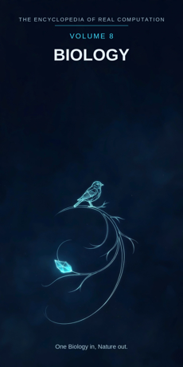

Chron.
The Encyclopedia of Real Computation

One Biology in, Nature out.
Home domain: Biology
One Biology in, Nature out.
◉ A Principle .... Biology ◎ B Purpose ...... Life ◉·◉ A.A Alpha ...... the Biologist ◉·◎ A.B Cross ...... the Organism △ X Primitive .... Cells ⚙ Y Protocol ..... Adaptation ⬢ Z Product ...... the Species ◐ i State ........ the Extinct ⚖ j Condition .... the Habitat ⊞ N Set .......... the Kingdoms ◷ h Time ......... the Lifespan ▣ C Context ...... the Wild ▦ D Domain ....... the Web ♥ E Emotion ...... Vitality ➤ F Intention .... Conservation ↻ pi Cycle ........ the Life Cycle ➔ phi Step ......... the Generation ⚄ e Probability .. Fitness • h-bar Planck ..... the Gene
Σ sigma Summation .. the Tree
◈ gamma Scale ...... the Biosphere Δ delta Change ..... Evolution ⁂ sigma' Options ... the Variations Ω Omega Answer ..... Nature
Every volume of this encyclopedia does the same work. The Prologue figures the subject whole. Then come twenty-four chapters, one per term, each doing four jobs in plain English: what the term means, where it sits in the computation, how it works on the volume's one running example, and what breaks without it. Then the Data, whole. Then the Crossings. Then the Sum. The running example of this volume is one finch on one island in the Galapagos - a small brown bird, watched closely enough that the whole history of life can be read off its beak.
Biology: the study of living things - what they are, how they hold together, how they change - carried out by watching life where it lives. Life: the state of being organised, self- keeping, and able to leave copies of itself; the field's purpose and its subject are the same word, which no other volume can say.
◉ Biology. ◎ Life = the root of Biology: aimed at itself, the
study asks what living is. ◉·◉ the Biologist: biology turned on itself becomes a person who studies it. ◉·◎ the Organism: biology crossed with life - the one living body where the crossing happens. △ Cells = Biology parted over the Kingdoms.
⚙ Adaptation = the function of the Cells: the working life does
on its own material, generation by generation. ⬢ the Species = Cells times Adaptation, the product: a kind that holds its shape across lifetimes. ◐ the Extinct = the root of negative Biology: the kinds the living world has lost and keeps losing.
⚖ the Habitat = the condition, element by element: a kind stands
while its place stands. ⊞ the Kingdoms = the set: Animals, Plants, Fungi, Bacteria, Archaea. ◷ the Lifespan: biology comes down through brief lives. ▣ the Wild: where biology stands.
▦ the Web = the Kingdoms crossed by the Study. ♥ Vitality = the
difference a landing makes. ➤ Conservation = the intention that carries a context. ↻ the Life Cycle: birth, growth, breeding, death, round again. ➔ the Generation: one turn's cast, one step of the lineage. ⚄ Fitness: the odds a kind carries - counted in grandchildren. • the Gene: the least piece, one instruction of the inheritance. Σ the Tree: all of life, summed as one family.
◈ the Biosphere: the scale of the whole living skin of the
Earth. Δ Evolution: life's own measure of change. ⁂ the Variations: the spread of differences every generation is born carrying. Ω Nature: the answer biology resolves into - the living world, known as one web.
IF If Biology to Life, then Cells & Adaptation is the Species, or the Extinct while the Habitat for the Kingdoms, through the Lifespan, in the Wild, the Web, Vitality, Conservation, at the Life Cycle by the Generation, with Fitness over the Gene - sum the Tree, scale the Biosphere, change Evolution, options the Variations - therefore Nature.
Stands below, after the chapters, figured whole: the Kingdoms crossed by the Study, twenty cells, and the six contexts.
The seven laws, run on this seed. Pythagoras: Biology squared plus Life squared overlays the Wild squared - the triangle checks in the Where, the If, and the Data identically, and the finch is its smallest living proof. Law of cosines: the tilt between the study and the living is set by context - in the field the angle is humility, in the laboratory it is control. Binomial: the middle term is the Organism, two times over - the kind shapes the body, the body tests the kind. AM-GM: Life is the geometric mean between Biology and the One. Log law: the Biosphere of the Species is the Biosphere of the Cells plus the Biosphere of the Adaptation - reach adds where living multiplies. Complex modulus: the Extinct is counted in the size of the field; biology is larger, not smaller, for keeping its dead on the tree. Triangle inequality: no route from Cells to Species is shorter than Adaptation; skip the generations and you hold a snapshot, not a kind.
Biology begins with the most familiar mystery there is: things that are alive. Its raw material is the cell, the small sealed room where chemistry becomes a self. Its work is adaptation - life's slow editing of itself, done blindly, by the differential survival of small differences. Its product is the species: a kind that persists, recognisable across a million separate lifespans. The field is honest about its shadow in a way that costs it something: most kinds that have ever lived are extinct, and the tree it draws is mostly dead branches, kept on the chart because the living ones are unintelligible without them. And its finish is nature - not a backdrop for life but life itself, summed: one web, one family, every member of it related, the finch on its island and the watcher on the shore cousins by the same arithmetic. One Biology in, Nature out.
What it means. Biology is the study of living things: their parts, their workings, their kinships, their change. It is the field whose subject can die under examination, run away from the examiner, or - in the case of its own practitioners - do the examining.
Where it sits. Biology is the Principle of this volume, the seed every other term grows from: Life is its root, the Biologist its self-product, the Organism its cross.
How it works. This volume follows one finch on one island: a ground finch, seed-eater, on a dry Galapagos shore. Everything in the volume is biology reading that one bird completely - its cells, its beak, its grandchildren - until the bird stands for the whole living world.
What breaks without it. Medicine, farming, and the keeping of every wild place borrow this field's map of what life is. Remove the Principle and those borrowers keep their tools and lose their subject.
What it means. Life is what biology is for: not a substance but a performance - matter organised to keep itself going, repair itself, and make more of itself. A thing is alive by what it does, and stops being alive when it stops doing it.
Where it sits. Life is the Purpose, B = the square root of A: the study aimed at itself extracts the one question every chapter serves - what is it to be alive? And B squared = A: life fully understood settles back into biology itself.
How it works. The finch performs life at kitchen scale: it eats, keeps its warmth, heals a cut foot, courts, and raises chicks that are finches. Five plain verbs. The volume's whole machinery exists to explain how matter manages those verbs.
What breaks without it. A biology that lost its purpose-term would be an inventory of parts - anatomy without the thread. Life is the demand that the parts add up to a performer.
What it means. The biologist is biology embodied: fieldcraft and patience trained into a person - knowing when to watch and when to measure, what a healthy bird looks like before the numbers say so, where the nest will be before it is found.
Where it sits. The Alpha, A times A: the field turned on itself - and here the turn is literal, since the biologist is one of the organisms the field studies, a knower inside its own subject.
How it works. Anyone can see the finch crack a seed. The biologist sees beak depth doing it, remembers last season's birds, and knows which measurements this chick's grandchildren will be judged by. The holder is the difference: one bird, two depths of seeing.
What breaks without it. Field notes without biologists are a drawer of unlabeled specimens: true, mute, and unable to ask the next question. Kinds get understood by people or not at all.
What it means. The organism is the interaction term: biology crossed with life in a single body - the one place where cells, adaptation, habitat, and lineage are all happening at once, in a package that can succeed or fail as a whole.
Where it sits. The Cross, A times B, counted twice: the lineage shapes the organism (its beak is its ancestors' answer), and the organism tests the lineage (its survival is the vote).
How it works. The finch is the cross made visible: neither a bag of cells nor an abstract species, but this bird, whose deep beak is its family's history and whose full crop is its own doing. Cross either way and the volume's story moves.
What breaks without it. With either factor at zero - study with no living subject, or life with no study turned on it - the product is zero. The organism is where the field keeps its honesty: every claim must survive being embodied.
What it means. Cells are the primitive material: the smallest rooms that are themselves alive - bounded, self-keeping, burning fuel, copying instructions. Every living thing is one cell or a society of them; there is no third arrangement.
Where it sits. X = A times N: the Principle spread across the Set. Each kingdom receives the principle as its own cells - the animal's soft-walled workers, the plant's green engines, the bacterium, complete in one room.
How it works. The finch is trillions of cells keeping house: muscle cells rowing the wings, gut cells harvesting the seed, each with the whole instruction set and only its own pages open. The bird is a city that flies.
What breaks without it. No primitives, no organisms: claims about life with nothing elementary underneath are poetry about a subject that lives at the cellular floor or nowhere.
What it means. Adaptation is what is done to cells' inheritance over generations: variation arises, the world edits, the edited version copies itself more. It is a protocol no one operates - the field's strange, blind working - and its results look designed because the editing never sleeps.
Where it sits. Y = f(X), with f the root of Life: the working is governed by the purpose - adaptations are the changes that carry toward staying alive, and the protocol is scored by survival alone.
How it works. In a dry year the island's soft seeds fail and only hard, large seeds remain. Deep-beaked finches crack them; shallow-beaked kin go hungry. One drought, and the next generation's beaks average deeper. The working ran - nobody ran it.
What breaks without it. Cells without adaptation are a museum of first drafts: life frozen at whatever it first managed, unable to meet a changing island. Adaptation is the field's hands - slow, and made of generations.
What it means. A species is a kind that holds: a population whose members breed with each other, resemble each other, and stay recognisably themselves across lifetimes. It is biology's load-bearing product - the unit the tree is drawn in.
Where it sits. Z = X times Y: the product, and it can always be factored back for audit - which cells, which history of adaptation, made this kind. A species that cannot be factored is a label, not a result.
How it works. The island's ground finches are one species because their beaks, songs, and matings say so - and a neighbouring island holds a sister species, same stock, beaks tuned to other seeds. Two products of one process, parted by water and time.
What breaks without it. Adaptation that never sets into kinds is weather, not evolution: change with no inheritors. The species is where effort becomes lineage.
What it means. The extinct are biology's shadow: the kinds that ended - every lineage whose last organism died. They are the overwhelming majority of all species that have ever lived, and the field keeps them on the chart deliberately.
Where it sits. i = the root of negative A: the state of the principle itself, counted in the field's size by the modulus law. The shadow is not outside biology; the fossil record is one of its libraries.
How it works. The island itself keeps the lesson: its giant tortoises were thinned to a few kinds by sailors' hunger, and one famous last tortoise died in living memory, ending a line older than the human species. The finch shares an island with ghosts, and the ghosts explain the island.
What breaks without it. A biology that hid its extinct would read the living world as permanent and designed, instead of surviving and contingent. Naming the shadow is what lets the field trust its tree.
What it means. The habitat is the place a kind stands under: its food, water, climate, enemies, and room. Biology prints the condition beside every kind, because a species account without its place is a claim with the weather torn off.
Where it sits. j, the Condition: the root taken element by element. Each kind stands while its habitat stands; pave the shore, dry the spring, or land a predator, and the condition fails first - the extinction notice comes later.
How it works. The finch's habitat is a few acres of lava, cactus, and seasonal seed-fall. Everything about the bird - beak, thirst-economy, nesting month - is that acreage translated into anatomy. Read the bird and you have read the place's terms.
What breaks without it. Unstated conditions are smuggled permanence: kinds moved to zoos and gardens fail mysteriously when the true condition was a whole hillside. Print the habitat and the failures become legible.
What it means. The kingdoms are biology's great divisions: Animals, Plants, Fungi, Bacteria, Archaea - five ways of being alive, from the bird to the microbe older than birds' whole lineage. Each kingdom is the whole principle read at one scale of organisation.
Where it sits. N, the Set - the term everything is counted in: cells are A times N, the domain is N crossed by the Study, the sum runs over N. The set as this volume defines it is complete and open underneath; the deep branches are still being redrawn.
How it works. The finch's island holds all five kingdoms in one view: the bird (Animal), the cactus (Plant), the fungi in the damp soil-crust, and Bacteria and Archaea in every gut and spring. The example's small stage seats the whole set.
What breaks without it. Unsorted life is a menagerie: all fascinating, none findable, kinships invisible. The set is what turns a cabinet of curiosities into a family tree.
What it means. The lifespan is biology's measure of time: the brief, bounded span one organism gets - a season for an insect, a century for a tortoise, a few years for our finch. The field does its work inside these spans and across their stacking.
Where it sits. h, Time: the passage the whole figure moves through. Biology's time is double - the lifespan, in which nothing evolutionary can happen, and the lineage, in which everything does - and the field lives in the tension between the two clocks.
How it works. The finch lives perhaps five years. The drought that shaped its beak killed half its cohort in one of them. A single short life is the grain at which selection is felt; ten thousand stacked lives are the dune it builds.
What breaks without it. Life studied outside time is a pressed flower: accurate, dead, and silent about everything that makes the subject itself - change, urgency, ending.
What it means. The wild is where biology stands: the unmanaged world, where kinds meet their real conditions and the field's claims are cashed. Laboratories and gardens are borrowed rooms; the wild is the house.
Where it sits. C, the Context, first of the setting terms: contexts transform the domain (the table stands in the Data), and the difference a context makes is measured by Vitality, the next part's first term.
How it works. The finch is a wild fact before it is a studied one: it was cracking seeds unobserved for millennia, and the biologist's arrival changed the bird not at all - which is precisely the credential the observation carries.
What breaks without it. Context-free biology is a bestiary of captives: real traits, wrong weights - behaviour in cages read as behaviour. The field stands in the wild or in quotation marks.
What it means. The web is biology's whole territory: the kingdoms crossed by the study - every kingdom in its four movements, from the question it asks to the teaching it hands on - and woven, since every kind eats, shelters, or infects another. The full table stands in the Data, twenty cells, every one figured.
Where it sits. D = N crossed by R: the set by the study. A kingdom becomes territory only when the study moves across it; the domain is a crossing, never a list - and here the crossing is visibly a web, each cell feeding others.
How it works. Read the finch's row-path: the Animal asks its hunger, settles its form, reaches its kinship, and hands on the husbandry by which islands are kept. One thread of the web, followed honestly, shakes the whole net.
What breaks without it. Kingdoms without a domain are five solitudes, each re-deriving the others' lessons in private languages. The web is the peace treaty and the food chain in one.
What it means. Vitality is the difference a living result makes when it lands: the felt aliveness of a place or a creature - the dawn chorus over a silent shore, a recovered bird over a sick one. Biologists are trained to distrust feelings and then quietly navigate by this one; the volume prints it instead.
Where it sits. E, Emotion: the difference between contexts, C1 minus C0. Before the drought year, the island is one place; after it - thinner, quieter, its finches fewer and deeper- beaked - it is another, and the size of the change is this term.
How it works. The watcher feels the island's vitality shift before the counts confirm it: fewer songs at dawn is data in this term's register, later verified in the census register. The two registers are both printed, and neither impersonates the other.
What breaks without it. A field that cannot register the landing cannot say why one hillside matters more than its species list - and conservation, the next chapter, would have no felt ground to stand on.
What it means. Conservation is biology's intention: the deliberate carrying of kinds and habitats into the future - the field turning its knowledge back on its subject to keep the subject existing. It is the one intention no other volume needs in quite this form: this subject can be lost.
Where it sits. F, Intention: the operator that carries contexts - C1 = C0 + F. Apply conservation and the same domain becomes the reserve, the breeding programme, the law that leaves the hillside standing. What survives the carrying is the living web itself.
How it works. The finch's island is a protected place: goats that stripped its hillsides were removed by deliberate act, and the finches' seed-trees came back. The example species is here to be followed partly because this term did its work.
What breaks without it. Unapplied biology is an obituary written in advance: the field would document the web exquisitely while it was taken apart. Conservation is why one volume can serve the unborn watcher.
What it means. The life cycle is biology's gait: egg, young, adult, parent, death - and the matter returned, the place made ready for the next turn. Every organism runs it; the differences are costumes on one round.
Where it sits. pi, the Cycle: the loop the figure runs, turning by steps. The cycle is also the field's memory policy: what a kind knows is stored in its cycle's timing - when to breed, when to migrate, when to sleep.
How it works. The finch runs the round in miniature: egg in a cactus fork, chick gaping, fledgling learning the seed-craft, adult holding a territory in the rains. Four turns of the island's year, and the lineage has renewed its lease.
What breaks without it. A linear biology would see births and deaths as bookkeeping. The cycle is what makes them one event: the kind persisting by means of the ending.
What it means. A generation is one cast of a lineage: all the individuals born in one turn, among whom the next turn's parents are chosen by the world. It is the field's step - the smallest advance in which evolution can be measured at all.
Where it sits. phi, the Step: the advance at the cycle's turn. In the grammar, the cycle turns by the step - at the Life Cycle by the Generation. Smaller than a generation there is no evolutionary change to measure, only biography.
How it works. The drought year is the example's step made famous: beaks measured before it and after it differ - one generation apart - because the shallow-beaked half of one cast left fewer chicks. A step, taken in a single stride of the lineage.
What breaks without it. Change asserted without generations is uncheckable: no before, no after, no count. Steps are how a lineage's story stays auditable by strangers.
What it means. Fitness is the odds a kind carries, counted the field's way: in descendants. A trait is fit not because it is strong or splendid but because its bearers leave more of the next generation. The term is cold, exact, and often surprising - the showy and the fit are different animals.
Where it sits. e, Probability: with Fitness over the Gene - every point of inheritance carries its odds. Adaptation is the machine that sets this term, generation by generation, and Chapter 23's Variations are the raw spread it sets them from.
How it works. After the drought, the deep-beaked finches' odds stood plainly higher: more fledglings, more grandchildren. Nothing in the bird aimed at this. Fitness is a statistic that looks, in retrospect, like a plan - the resemblance is the field's oldest trap, and the term exists to keep it labelled.
What breaks without it. Without printed odds, a field cannot distinguish its explanations from its admiration - every trait would be "for" whatever story flatters it. Fitness is the ledger that keeps the stories honest.
What it means. The gene is the least piece of biology: one stretch of the inheritance that makes a difference - one instruction in the long text every cell carries. Below the gene there is chemistry; at the gene, chemistry becomes heredity.
Where it sits. h-bar, the Planck term: the smallest resolution of the figure. The Sum of this volume is taken at the gene's grain - the total of the field is defined over single instructions and their copying, summed past counting.
How it works. Somewhere in the finch's inheritance sits the small text whose variants deepen or narrow a beak. The drought did not edit the text; it edited which copies of the text got copied. The least piece is the ledger in which the whole example is finally written.
What breaks without it. No least piece, no accounting: heredity would be a family resemblance with no mechanism, and adaptation would have nothing material to work on.
What it means. The tree of life is biology summed: every kind, living and extinct, placed on one branching figure of descent - the single diagram toward which the whole field's work converges. A new species is not filed when it is named; it is filed when the tree finds its branch.
Where it sits. sigma, Summation: the total taken over the Set, whole, every kingdom, none sampled. It is the inverse of the parting that made Cells - the field breathes out into kinds and in into one family.
How it works. The finch hangs on the tree at a fine twig: birds, songbirds, finches, this island's ground finches - and the same tree's deep trunk runs down past tortoises and iguanas to the first cells. One diagram holds the volume's whole cast, the watcher included.
What breaks without it. Unsummed biology is a bestiary: kinds in alphabetical order, kinship nowhere. The tree is the agreement that the kinds are one story, not a catalogue.
What it means. The biosphere is the scale of the whole: the thin living skin of the Earth - a few miles of air, the sunlit top of the sea, the soil's dark inches - inside which every fact in this volume happens. It is the largest reading of the field and the frame of all the smaller ones.
Where it sits. gamma, Scale: the translator of the figure. By the log law, the biosphere of a product is the sum of the biospheres of its factors - the species' reach equals the reach of its cells plus the reach of its adaptation, which is why a microbe can govern an ocean and a bird can mark an island.
How it works. The finch's world is one island's shore - and that shore is a working cross-section of the whole skin: producers, eaters, decomposers, all in a few acres. Read at the biosphere's magnification, the example is not small; it is a sample of everything.
What breaks without it. Read at one magnification, the field cannot tell its keystone from its passenger, and manages a hillside with the same care as a puddle.
What it means. Evolution is biology's own measure of change: descent with modification, the observed fact that kinds alter across generations and split into new kinds. It earns the delta twice - it is the field's change-term, and it is the discovery that changed the field itself from a catalogue into a history.
Where it sits. delta, Change: applied in the closing run after the sum and the scale are known - change read in full view of the whole. In the field itself, delta is revision too: kinds are re-drawn on the tree as evidence lands, and the redrawing is printed, not hidden.
How it works. The finch is evolution at walking pace: beaks in one generation, islands' sister species in a thousand. Let the example's clock run and the volume's whole drama - variation, selection, splitting - is the same arithmetic with more zeros.
What breaks without it. A biology without its change-term describes a stocked aquarium: kinds as permanent furniture. The actual subject is a river, and this term is the current.
What it means. The variations are biology's open spread: the differences every generation is born carrying - beaks a shade deeper, songs a note off, tolerances a degree wider - most of them worthless, a few of them the future. They are printed here as options, not results: the material the next selection reads.
Where it sits. sigma-prime, the Options: last before the Answer, by the book's discipline. No answer in this encyclopedia is read until its spread has been shown; a species printed without its variations looks more fixed than any kind is.
How it works. In a kind year the finch's variations are noise - deep and shallow beaks alike feed fine. In the drought year they were the whole ballgame: the spread the parents carried became the difference the chicks inherited. Options are cheap in good times and priceless in bad ones, like all options.
What breaks without it. Hide the spread and the field presents each kind as a statue - and cannot explain how any statue ever became another. The variations are biology's capital: the named shape of its next chapter.
What it means. Nature is what biology resolves into: the living world known as one thing - not a warehouse of specimens but a web with a history, every member related, every place earned. It is the widest answer in this encyclopedia's field volumes, because its subject is everything that has ever been alive.
Where it sits. Omega, the Answer: the limit of the whole figure, and its door back - nature shows the next variation (Chapter 23 keeps them ready), the variation roots the next biology. The volume closes where the island reopens.
How it works. The finch ends the volume as it began - cracking seeds on lava - but the watcher now reads it whole: cell, beak, lineage, island, tree. One small bird, fully placed, is the resolution this term names: knowledge of life that has become a way of seeing all of it.
What breaks without it. Without a resolution, the computation turns and never lands: cells counted, generations tracked, trees drawn - and no point at which the field may say "this much of life is understood as one thing" and stand inside it. One Biology in, Nature out.
The Study runs in four movements: the QUESTION the kingdom asks, the FACT it settles, the UNDERSTANDING it reaches, the TEACHING it hands on.
ANIMALS ... Question: the Hunger - Fact: the Form - Understanding: the Kinship - Teaching: the Husbandry
PLANTS .... Question: the Light - Fact: the Leaf -
Understanding: the Harvest Cycle - Teaching: the Cultivation
FUNGI ..... Question: the Rot - Fact: the Network -
Understanding: the Recycling - Teaching: the Fermentation BACTERIA .. Question: the Small - Fact: the Colony - Understanding: the Ubiquity - Teaching: the Culture ARCHAEA ... Question: the Extremes - Fact: the Survivor - Understanding: the Antiquity - Teaching: the Limits
THE WILD (base) ... Emotion Vitality, Intention Conservation gives THE WEB.
THE GARDEN ......... Emotion Delight, Intention Tending
gives THE CULTIVAR.
THE LABORATORY ..... Emotion Care, Intention Testing
gives THE CULTURE DISH.
THE RESERVE ........ Emotion Reverence, Intention Guarding
gives THE SANCTUARY.
THE FARM ........... Emotion Gratitude, Intention Raising
gives THE HUSBANDRY.
THE WORLD .......... Emotion Belonging, Intention Stewardship
gives THE COMMONS.
This volume's roads to its siblings. To VOLUME 1: the gene and the tree stand in the Book where the least piece and the sum are founded. To VOLUME 9 (Medicine): this volume's child field - the physician's Body is this volume's Web read at one species, and its Cure is Conservation turned inward. To VOLUME 5 (Chemistry): the cell is the meeting place - chemistry's Substances become biology's primitives at exactly one address. To VOLUME 6 (Earth Science): the island itself, the finch's condition, is that volume's Terrain. Every term of this volume holds an address on the great grid; the index of them stands in Volume 18.
THE TALLY LANE: 5 kingdoms - 20 domain cells - 6 contexts - 24 chapters - 1 finch, followed entire. THE SIGMA LANE: read whole, the volume sums to +1: one biology, entire, its extinct counted and its spread shown.
ITS OPEN QUESTIONS (sigma-prime, carried to Volume 18): how life began from non-life - how many kinds the kingdoms actually hold, most of them unnamed - whether the variations of Chapter 23 can ever be predicted before the drought chooses.
One Biology in, Nature out.
ADDRESS INDEX: this volume's terms stand at the Biology home domain of the great grid; full addresses in Volume 18. GLOSSARY: species - a kind that breeds true and holds across lifetimes. fitness - success counted in descendants. variation - the spread of differences a generation is born carrying. habitat - the place whose terms a kind's anatomy answers. ICON TABLE: stands at the front of this volume, and of every volume, identical.